iXpat brings the Surface Mouse's haptics to macOS, then goes further: an Action Ring under the pointer, scrolling with real momentum, force click, and a feel you can tune for every app. The same app now runs natively on Windows 10 and 11.
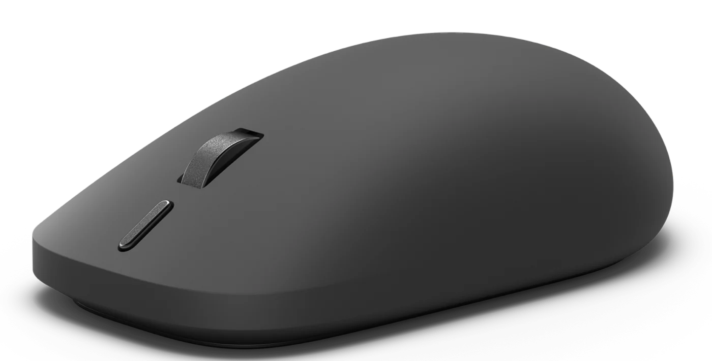
A live schematic that lights up as you click, an event monitor, and six tabs for haptics, the action button, the Action Ring, per-app profiles, pointer and scroll, and diagnostics. The menu bar popover keeps the essentials one click away.
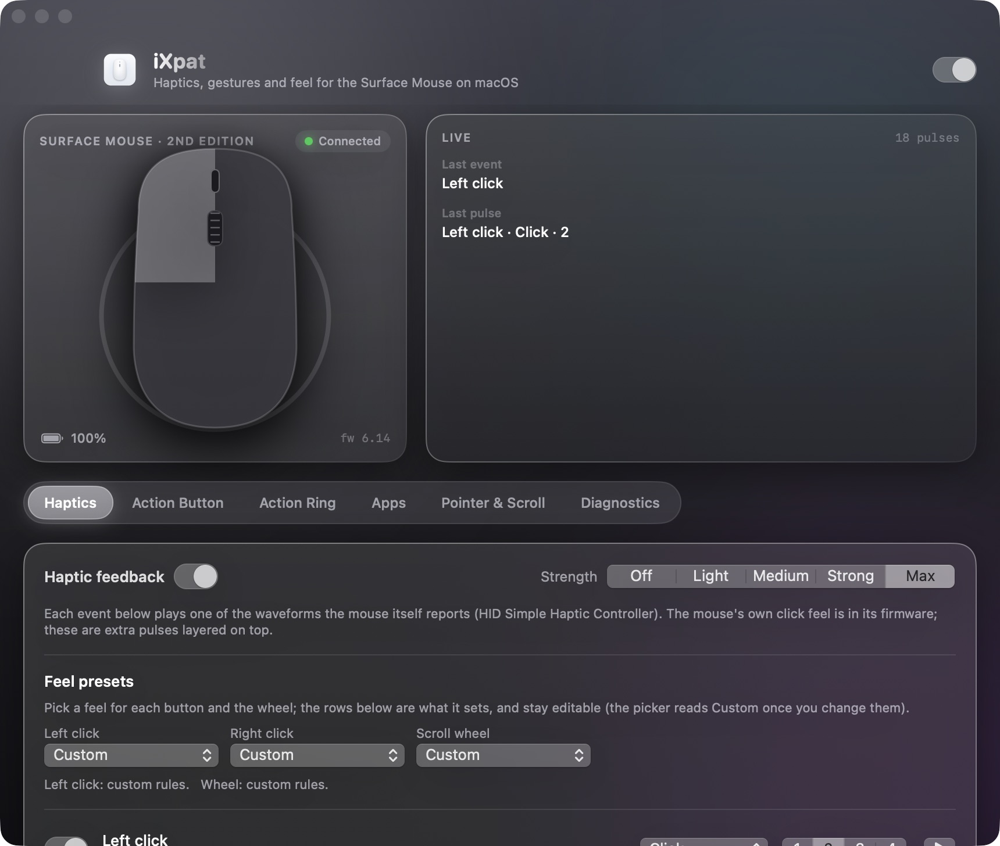
The Surface Mouse carries a standard haptic controller with its own waveform table. iXpat reads that table and plays it from user space, at one of five strengths, for whatever you decide deserves a pulse.
Clicks, wheel detents, menu highlights, text selection by word and by line, screen edges, drag and drop, window tiling, app switches. Each event picks its own waveform and strength.
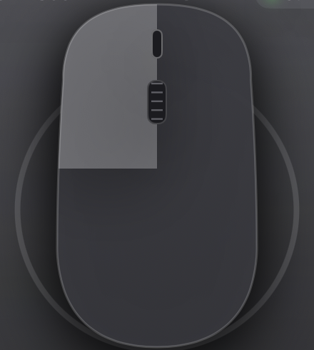
A radial menu that opens under the pointer. Sweep toward a chamber, feel a detent as you cross each one, release to run it. Up to eight chambers, all editable.
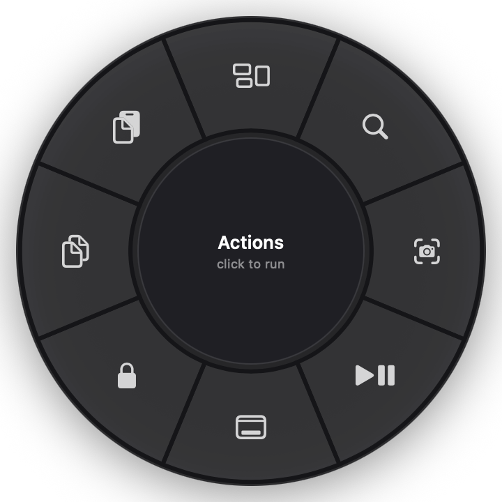
A slow notch settles crisply. A flick accelerates and coasts. Detents go firm, light or silent with the wheel's speed, and free-spin on a flick.
Press and hold the left button for Look Up and link previews, with a pulse the moment it engages. Just like a Force Touch trackpad.
Press, double-press and hold each run what you choose. Hold and move the mouse for volume, brightness, tracks and desktops while the pointer stays put.
Each rule has its own waveform, strength and a play button to hear it. Feel presets set a whole button or the wheel in one pick, and a rule can carry a second pulse, a swell under a long press, or a faint texture while the wheel free-spins.
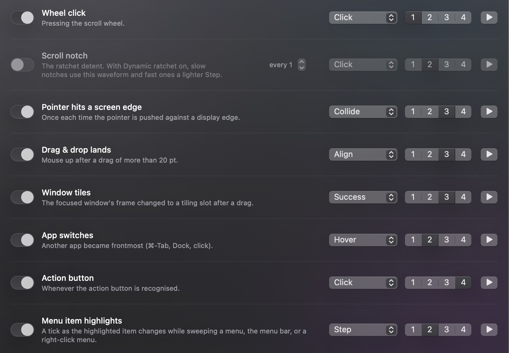
The mouse's firmware sends a Windows shortcut for each gesture. iXpat recognises them, hides them from your apps, and maps press, double-press and hold to the Action Ring, Mission Control, Spotlight, a screenshot, lock, media keys, an app, a shortcut or a shell command.
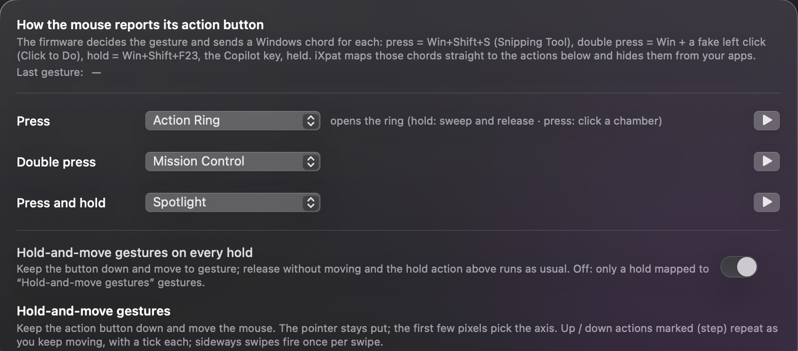
Assign the ring to the action button. Hold and sweep, or press and click a chamber. Every chamber has a name, a symbol and an action, and crossing from one to the next is a detent you can feel.
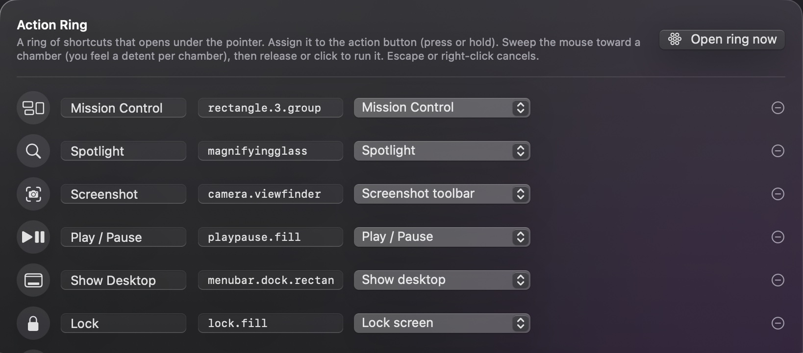
Tracking speed, acceleration, scrolling speed and direction for the Surface Mouse, while the trackpad keeps the system values. Smooth kinetic scrolling turns each notch into a glide with momentum and acceleration you can dial in.
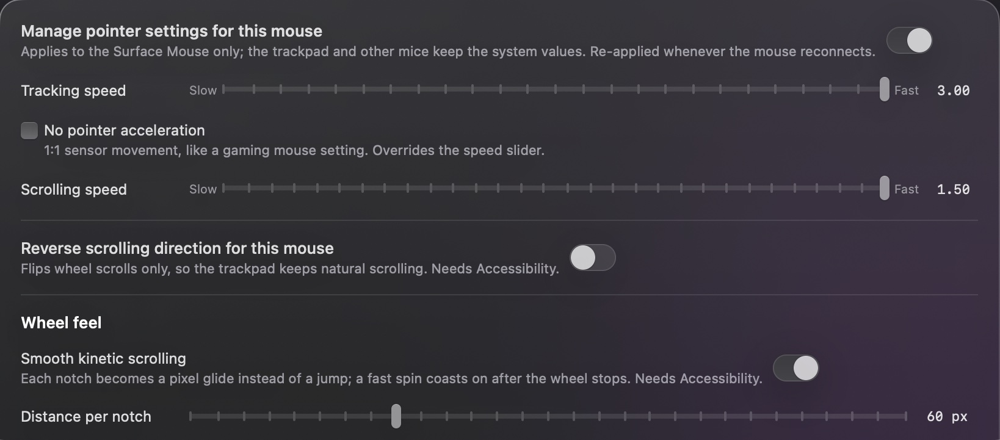
Override haptics, click and wheel feel, smooth scrolling, free-spin, the ring and the gestures for any app while it is frontmost. Everything left on Default follows the main tabs.
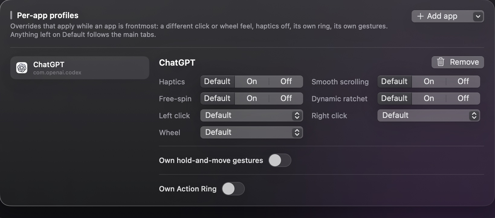
The mouse exposes a Simple Haptic Controller over HID. iXpat talks to it through IOKit, the same way any user-space app may.
Every setting keys on the Surface Mouse's own device identity. Your trackpad, other mice and the rest of the system are untouched.
Swift, SwiftUI and AppKit. Read it, build it, change it. A plan for a Windows counterpart lives in the repo.
Windows turns on the Surface Mouse's haptics for a handful of system gestures and leaves the rest to the firmware. iXpat for Windows adds everything the Mac app does: menu and selection ticks, a dynamic ratchet, scrolling with momentum, the Action Ring, a remapped action button, per-app profiles and the plugin bridge. One iXpat.exe in the tray. No driver, no service, no elevation.
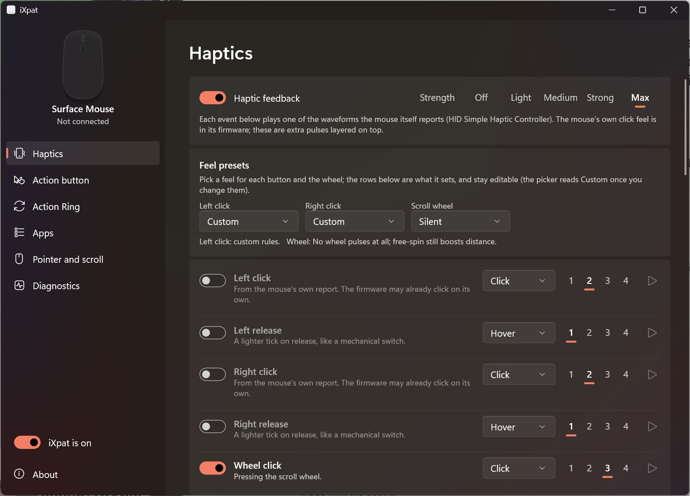
Written in C++ on Win32 and Direct2D: a 1 MB tray app that starts in a blink, follows light and dark mode and every display scale, on x64 and ARM64.
Pulses go straight to the mouse's own haptics interface. Raw Input and low-level hooks shape clicks and the wheel. The firmware update channel is never touched.
A per-user installer with optional start at sign-in, or unzip and run. Settings live in one file with the same layout as the Mac app, so a tuned profile moves between the two.
Four steps from the box to haptics. The mouse talks plain Bluetooth, so no Surface app and no Windows PC are involved.
Put in the two AAA batteries, then hold the power and pairing button on the underside until the light starts pulsing.
On the Mac open System Settings → Bluetooth, wait for Surface Mouse to appear and click Connect. The light stops pulsing once it is paired.
Download the DMG, open it and drag iXpat to Applications. Or from a terminal: brew install knightynite/ixpat/ixpat.
Launch it. It lives in the menu bar; there is no Dock icon.
On first launch iXpat opens a setup guide with a button for each: Input Monitoring to read the mouse's clicks and wheel, and Accessibility for kinetic scrolling and the menu and selection ticks.
Both live under System Settings → Privacy & Security. The guide ticks each one off as you turn it on.
The schematic in the settings window lights up as the mouse reports events, and the first click brings the first pulse.
Pick a strength, choose a feel preset for each button, map the action button, and build your Action Ring.
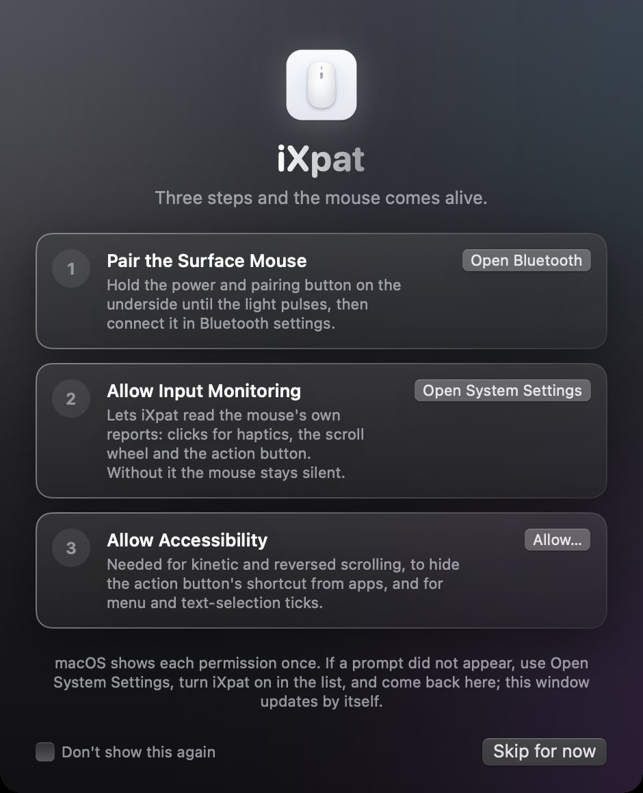
The first time iXpat opens it shows this window. Each step has its own button, the status updates by itself as you grant things, and nothing else appears until you are through. If a permission is ever missing later, the guide comes back on launch and the menu shows a warning that opens it.
Yes. It pairs over plain Bluetooth and macOS drives the pointer, the buttons and the wheel out of the box. What macOS does not do is play the haptics or understand the action button. iXpat adds both, plus the rest of what is on this page.
With iXpat, yes. The mouse exposes a standard HID haptic controller with eight waveforms. iXpat plays them from user space for clicks, scroll detents, menu highlights, text selection, window tiling and more, at the strength you choose. Without iXpat the mouse is silent on a Mac.
Yes. The button sends Windows shortcuts that mean nothing on a Mac. iXpat catches them, hides them from your apps, and maps press, double press and hold to Mission Control, Spotlight, a screenshot, the Action Ring, media keys, an app, a shortcut or a shell command.
No. Nothing on this page involves Windows. Pair the mouse with the Mac, install iXpat, and every setting lives in iXpat. The only Windows-side thing iXpat cannot replace today is a firmware update, which Microsoft has not yet published for this model.
No. iXpat is written for the 2nd Edition only (USB vendor 045E, product 0880). Older Surface mice have no haptic controller, so there is nothing for it to drive. Other mice and the trackpad are left alone.
iXpat needs macOS 14 Sonoma or later. The download is a universal build; Apple Silicon is tested, Intel is included but untested so far.
Yes. iXpat is free and open source under the MIT license. The code, the issues and the releases are on GitHub.
Free, open source, for macOS 14 and later on Apple Silicon and Intel Macs.
Open the DMG, drag to Applications, launch from the menu bar.
On Windows 10/11 (x64 and ARM64): one unzipped iXpat.exe or a per-user installer, no driver, no elevation.
brew install knightynite/ixpat/ixpatgit clone https://github.com/knightynite/ixpat.git && cd ixpat && ./build.sh